Step 1: Create a GitHub Repository
To share your code on GitHub, first, you need to create a repository. A repository is like a project folder where you store your code and related files. Go to GitHub and click the "New" button to create a new repository.
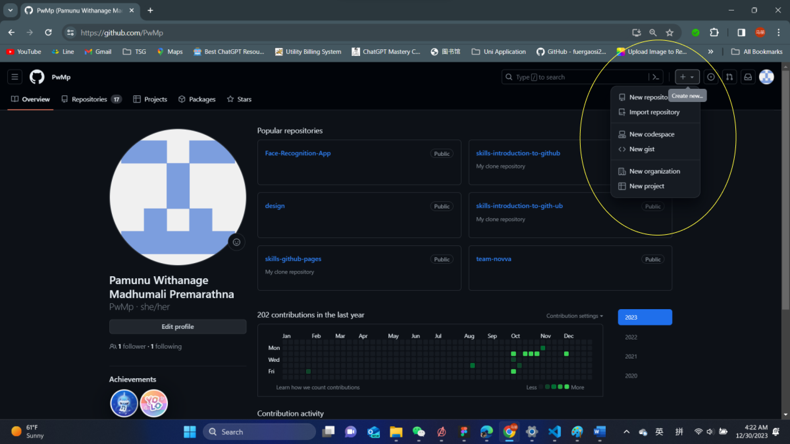
Step 2: Configure Your Repository
Give your repository a name and description that clearly reflects the project. You can also specify visibility (public or private) and set other options as needed.
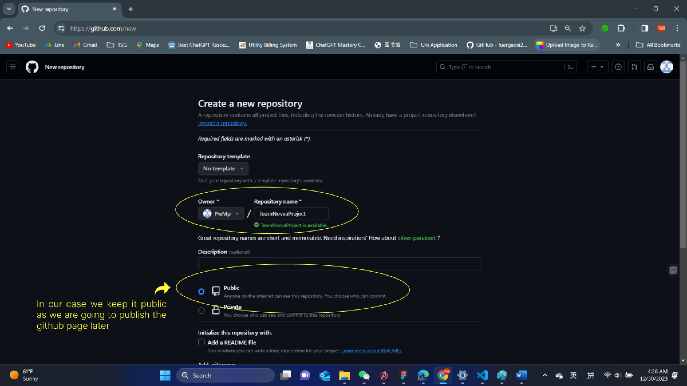 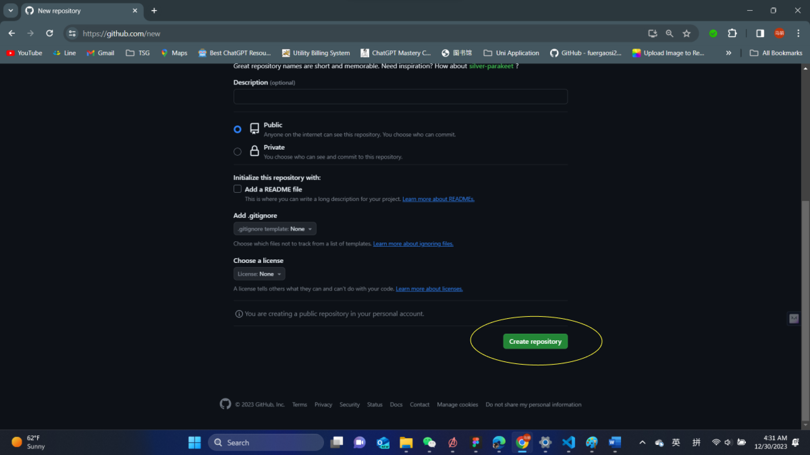
Step 3: Initialize Your Repository
To initialize your repository with code, you can either push an existing project from your computer or create a new repository on your local machine and push it to GitHub.
You can simply choose to upload your project files manually to your repository as follows.
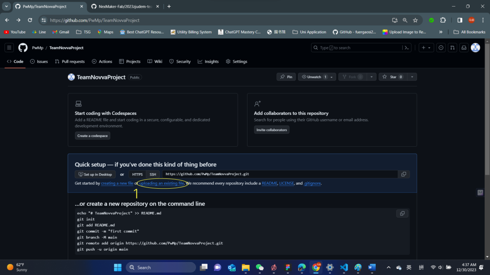 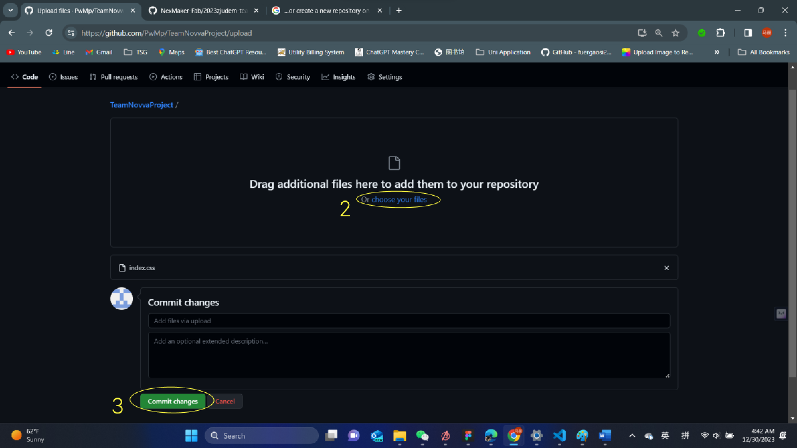
But this way can be quite troublesome when you are working with a large project.
There are some other ways to do it. As an example you can use your command line to upload a project to the repository.
If you are using windows, you should make sure you have installed Git in your computer before these steps.
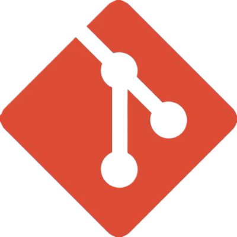
You can see a git installing tutorial here.
# Navigate to the project directory
cd my-project
# Initialize a Git repository
git init
# Add the project files to the staging area
git add .
# Commit the changes to the repository
git commit -m "Initial commit"
# Push the changes to the remote repository
git push origin master
Once you have pushed the changes, the project will be available on the remote repository.
Step 4: Add, Commit, and Push Code
Using Git, you'll add your code files to the repository, commit your changes with a brief description, and then push them to your GitHub repository. This process keeps your code up to date on GitHub.
Once again this might be challenging in a long term teamwork. So we can use GitHub Desktop to keep things simple.
Download and install GitHub Desktop from the official website
- Open GitHub Desktop.
- Click on "File" in the top-left corner and select "Clone Repository."
- Choose the repository you want to work with and click "Clone."
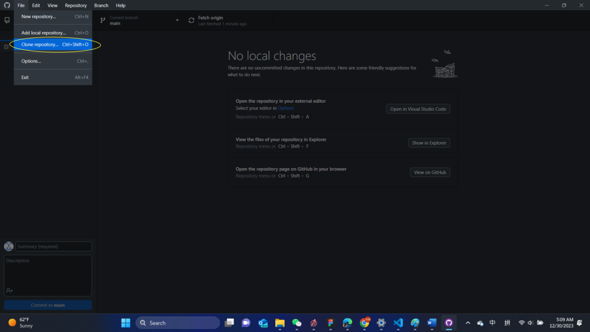 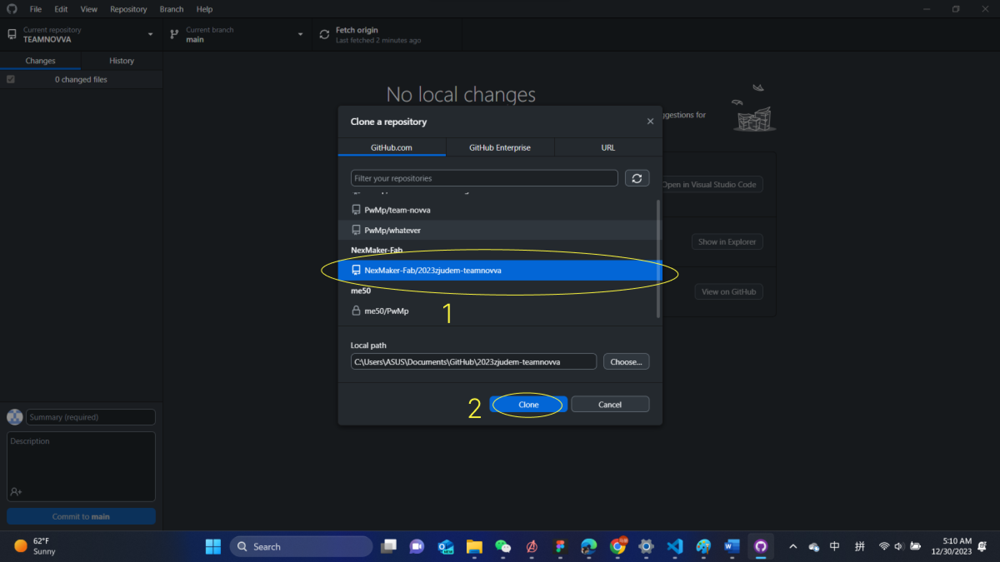
Open Repository in Preferred Editor
Once the repository is cloned, click on "Current Repository" in the top-left corner and select "Open in [Your Preferred Editor]." This will open the repository in your code editor (e.g., Visual Studio Code).
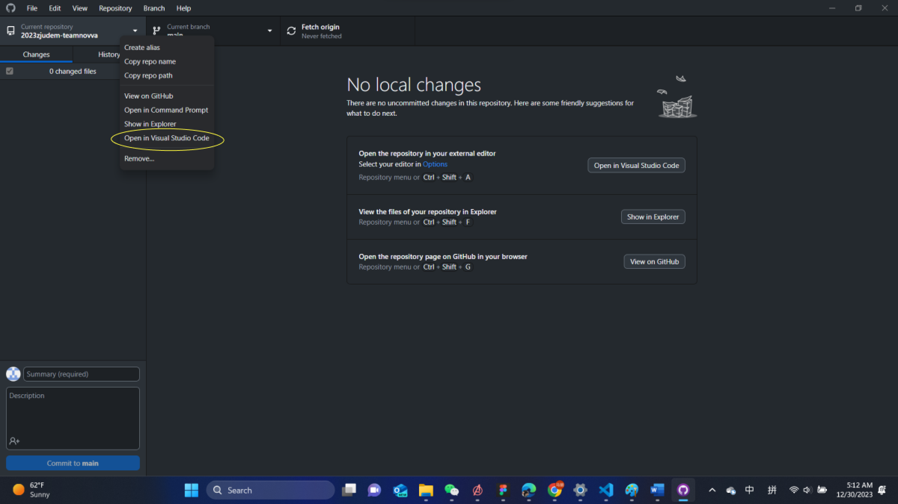 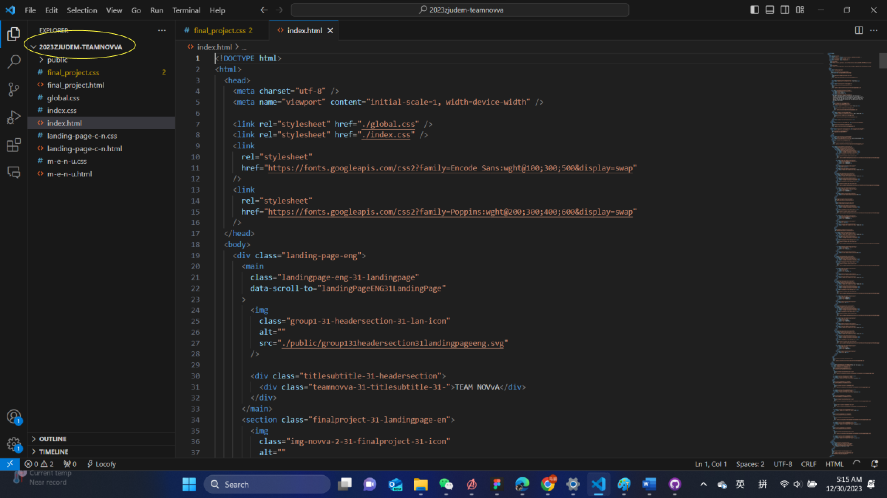
Use your preferred code editor to make changes to the files in your repository.
- Go back to GitHub Desktop.
- You'll see the changes you made in the "Changes" tab.
- Enter a summary and a (optional) description of the changes.
- Click on "Commit to main" (or another branch you are working on).
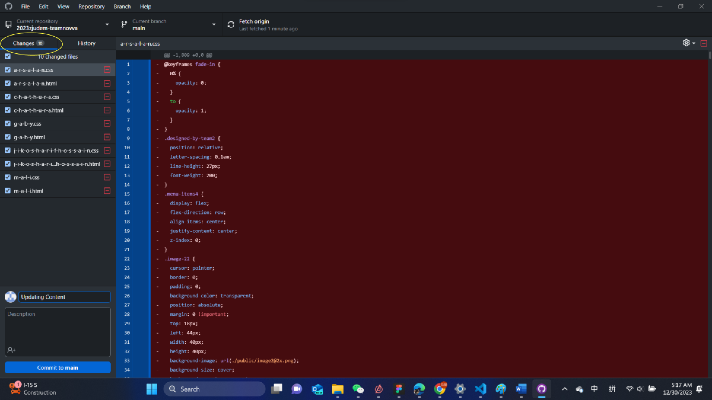
After committing the changes, click on "Push origin" in the top-right corner. This pushes your committed changes to the GitHub repository.
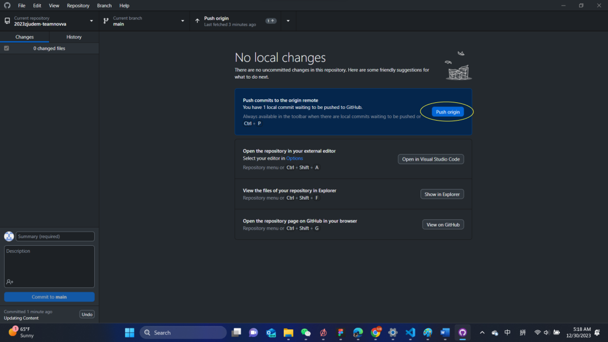
Open your web browser and go to your GitHub repository on the GitHub website.
You should see the changes you made reflected in your repository.
Create a Pull Request (Optional)
If you are working in a collaborative environment or using branches, you may want to create a pull request to propose changes to the main branch.
This step is optional and depends on your workflow.
That's it! You've successfully updated the code on GitHub using GitHub Desktop. This workflow simplifies the process of making changes, committing them, and pushing them to GitHub, all through a user-friendly interface.
Step 5: Collaborator and Teams
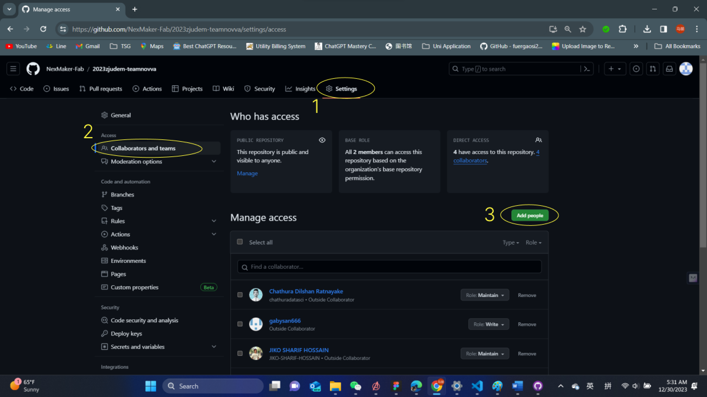
Here's how to collaborate with a team on GitHub
- Here's how to collaborate with a team on GitHub:
- Navigate to your project
- Click the Settings tab
- In the Access section, click Collaborators
- Click Add people
- Search for the team or individual user you want to invite
- Choose the desired role, such as "admin"
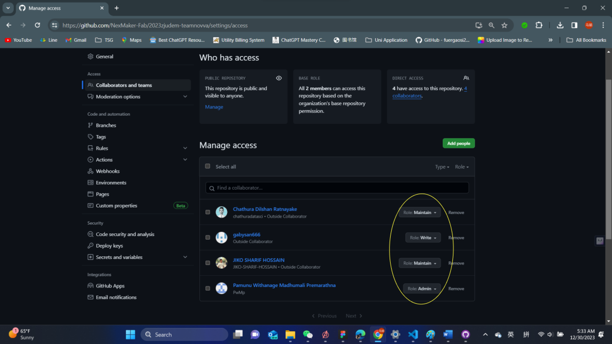
Read
Can read and clone this repository. Can also open and comment on issues and pull requests.
Triage
Can read and clone this repository. Can also manage issues and pull requests.
Write
Can read, clone, and push to this repository. Can also manage issues and pull requests.
Maintain
Can read, clone, and push to this repository. They can also manage issues, pull requests, and some repository settings.
Admin
Can read, clone, and push to this repository. Can also manage issues, pull requests, and repository settings, including adding collaborators.
By using GitHub collaborators and teams, repository owners can effectively manage access control, streamline collaboration, and organize contributors based on their roles within a project. These features help maintain a structured and secure development workflow.
Once you are done with development of your webpage, you can follow the below instructions to make your webpage live using GitHub pages.
Step 1: Access Repository Settings
In your GitHub repository, click on the "Settings" tab. It's located at the right-hand side of your repository's menu bar.
Scroll down the Settings page until you find the "GitHub Pages" section.
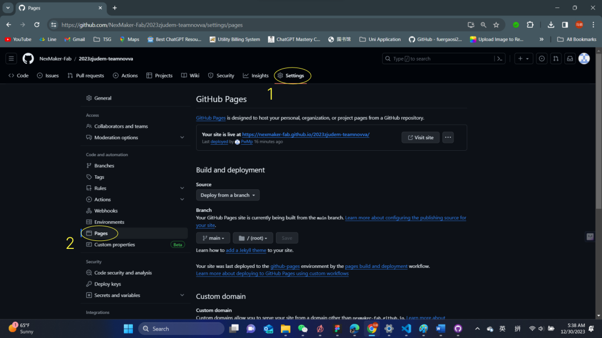
Step 2: Select the Source
In the "GitHub Pages" section, you'll find an option to select the source for your GitHub Pages site. Typically, you want to choose the "main" or "master" branch where your website code is located.
Once you've selected the source branch, click the "Save" button. GitHub will now publish your GitHub Pages site from the specified branch.
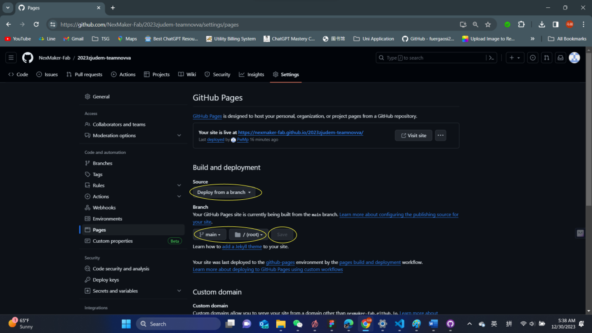
Step 4: Wait for GitHub to Publish Your Site
GitHub will automatically build and publish your website. It may take a few minutes for your site to become accessible.
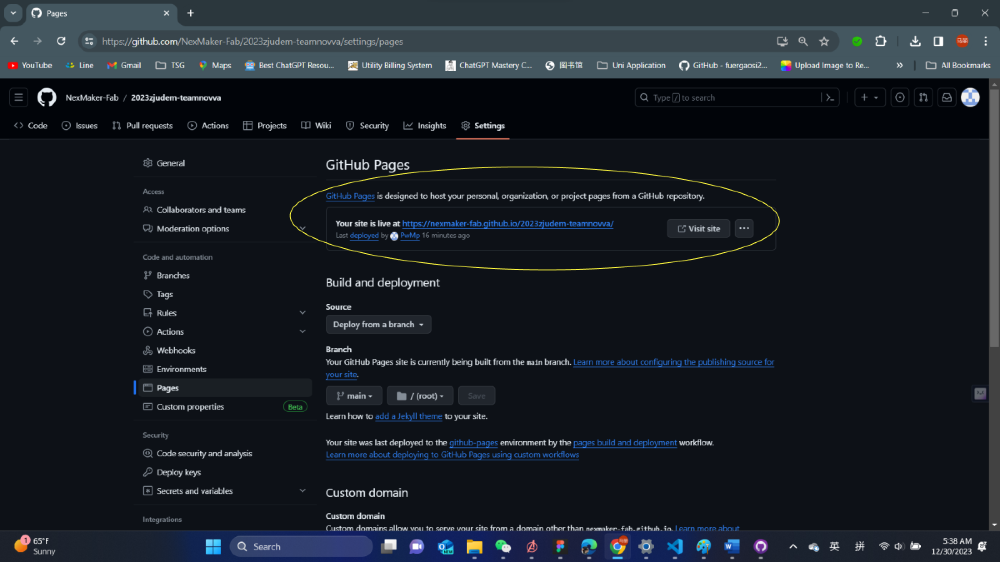
Step 5: Access Your GitHub Pages Website
After the site is published, you'll find a link to your GitHub Pages website in the "GitHub Pages" section of your repository's settings. It will typically be in the format: https://username.github.io/repository-name.
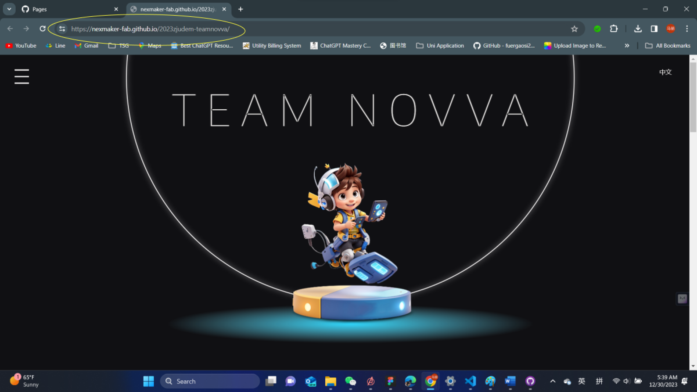
Step 6: Configure Custom Domain (Optional)
If you want to use a custom domain (e.g., yourwebsite), you can configure it in the "Custom domain" section of your GitHub Pages settings. Be sure to follow GitHub's instructions for setting up a custom domain.
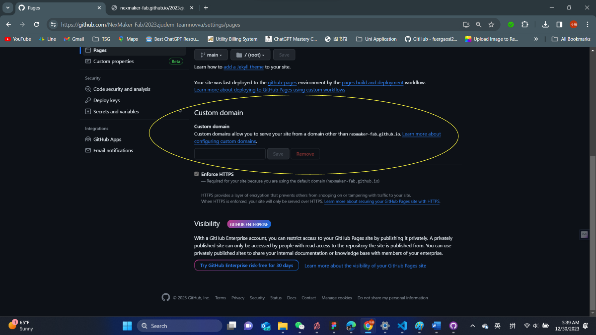
That's it! Your website is now live on GitHub Pages, and you can share it with the world. GitHub Pages is a convenient way to host static websites for free, and it provides a reliable platform for showcasing your projects, portfolios, documentation, and more.
Here are more references for you to follow:
ref 1
ref 2
ref 3
ref 4
ref 5